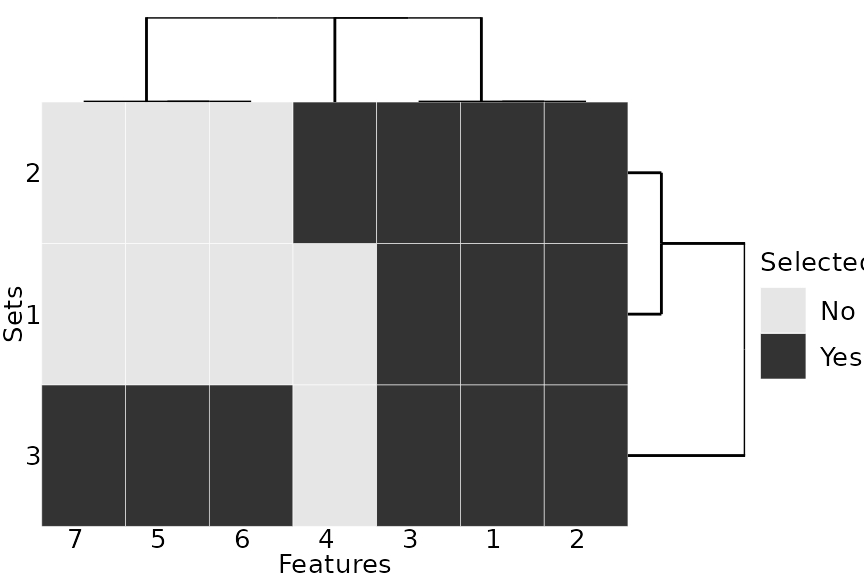

The R package stabm provides functionality for quantifying the similarity of two or more sets. The anticipated usecase is comparing sets of selected features, but other sets, e.g. gene list, can be analyzed as well. Quantifying the similarity of feature sets is necessary when assessing the feature selection stability. The stability of a feature selection algorithm is defined as the robustness of the set of selected features towards different data sets from the same data generating distribution (Kalousis, Prados, and Hilario 2007). Stability measures quantify the similarity of the sets of selected features for different training data sets. Many stability measures have been proposed in the literature, see for example Bommert, Rahnenführer, and Lang (2017), Bommert and Rahnenführer (2020), and Nogueira, Sechidis, and Brown (2018) for comparative studies. The R package stabm provides an implementation of many stability measures.
A list of all stability measures implemented in stabm is available with:
## Name Corrected Adjusted Minimum Maximum
## 1 stabilityDavis FALSE FALSE 0 1
## 2 stabilityDice FALSE FALSE 0 1
## 3 stabilityHamming FALSE FALSE 0 1
## 4 stabilityIntersectionCount TRUE TRUE <NA> 1
## 5 stabilityIntersectionGreedy TRUE TRUE <NA> 1
## 6 stabilityIntersectionMBM TRUE TRUE <NA> 1
## 7 stabilityIntersectionMean TRUE TRUE <NA> 1
## 8 stabilityJaccard FALSE FALSE 0 1
## 9 stabilityKappa TRUE FALSE -1 1
## 10 stabilityLustgarten TRUE FALSE -1 1
## 11 stabilityNogueira TRUE FALSE -1 1
## 12 stabilityNovovicova FALSE FALSE 0 1
## 13 stabilityOchiai FALSE FALSE 0 1
## 14 stabilityPhi TRUE FALSE -1 1
## 15 stabilitySechidis FALSE TRUE <NA> NA
## 16 stabilitySomol TRUE FALSE 0 1
## 17 stabilityUnadjusted TRUE FALSE -1 1
## 18 stabilityWald TRUE FALSE 1-p 1
## 19 stabilityYu TRUE TRUE <NA> 1
## 20 stabilityZucknick FALSE TRUE 0 1This list states the names of the stability measures and some information about them.
stabm provides the possibility to transform these measures, such that they are corrected for chance.Now, let us consider an example with 3 sets of selected features
and a total number of 10 features. We can evaluate the feature selection stability with stability measures of our choice.
feats = list(1:3, 1:4, c(1:3, 5:7))
stabilityJaccard(features = feats)## [1] 0.5595238
stabilityNogueira(features = feats, p = 10)## [1] 0.4570136For adjusted stability measures, a matrix indicating the similarities between the features has to be specified.
mat = 0.92 ^ abs(outer(1:10, 1:10, "-"))
set.seed(1)
stabilityIntersectionCount(features = feats, sim.mat = mat, N = 1000)## [1] 0.4138325Finally, stabm also provides a visualization of the feature sets.
plotFeatures(feats)
Bommert, Andrea, and Jörg Rahnenführer. 2020. “Adjusted Measures for Feature Selection Stability for Data Sets with Similar Features.” In International Conference on Machine Learning, Optimization, and Data Science - LOD 2020, in Print. https://arxiv.org/abs/2009.12075.
Bommert, Andrea, Jörg Rahnenführer, and Michel Lang. 2017. “A Multicriteria Approach to Find Predictive and Sparse Models with Stable Feature Selection for High-Dimensional Data.” Computational and Mathematical Methods in Medicine 2017. https://doi.org/10.1155/2017/7907163.
Kalousis, Alexandros, Julien Prados, and Melanie Hilario. 2007. “Stability of Feature Selection Algorithms: A Study on High-Dimensional Spaces.” Knowledge and Information Systems 12 (1): 95–116. https://doi.org/10.1007/s10115-006-0040-8.
Nogueira, Sarah, Konstantinos Sechidis, and Gavin Brown. 2018. “On the Stability of Feature Selection Algorithms.” Journal of Machine Learning Research 18 (174): 1–54. http://jmlr.org/papers/v18/17-514.html.